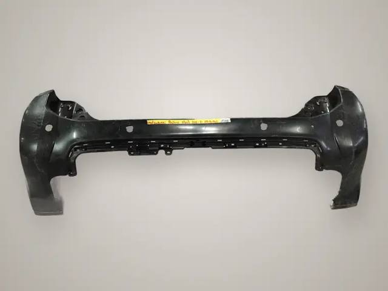
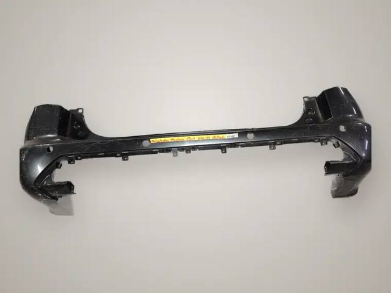
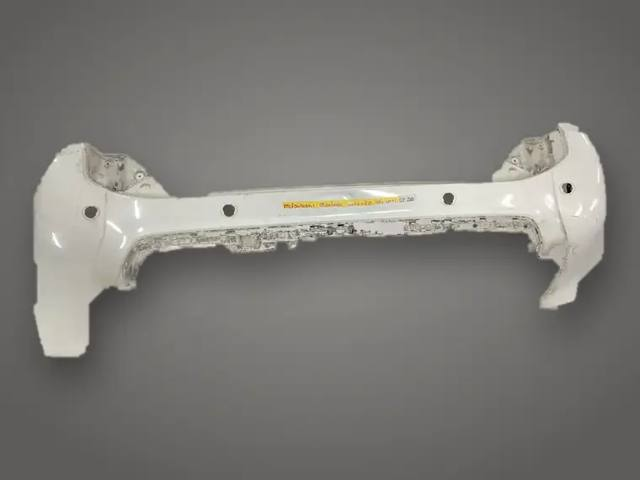

Piezas de carrocería para Mitsubishi Montero
9 piezas disponibles hoy para Mitsubishi Montero, cada una con su foto y su código: defensas traseras (4), parrillas (1), estribos y rolling boards (1), capós (1). Dinos el año de tu carro y te confirmamos si le sirve.
- Garantía de 3 días
- Foto real de cada pieza
- Efectivo, Yappy o ACH
- Lunes a sábado, 8:00 a. m. a 5:00 p. m.
Defensas traseras para Mitsubishi Montero 4
 DT142Montero Sport2020-24 · original
DT142Montero Sport2020-24 · original
DT148Montero Sport2016-19 · original nuevo
DT150Montero Sport2020-24 · original
DT210Montero Sport2016-19 · original 663Montero Sport
663Montero Sport RB006Montero
RB006Montero TM062Montero Sport
TM062Montero Sport LD059Montero
LD059Montero MLT028Montero Sport
MLT028Montero Sport